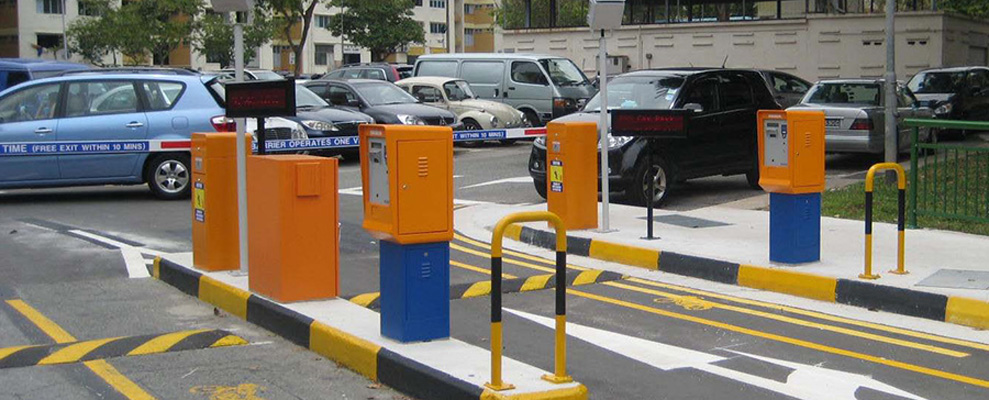
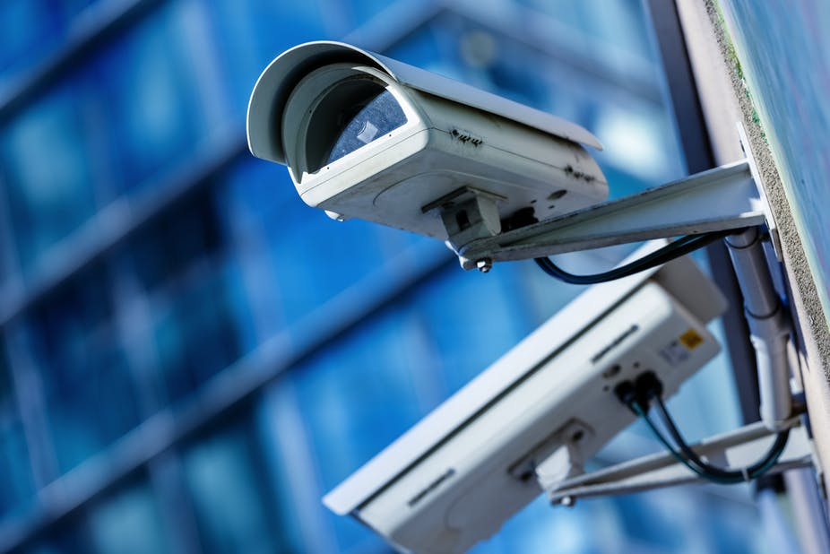
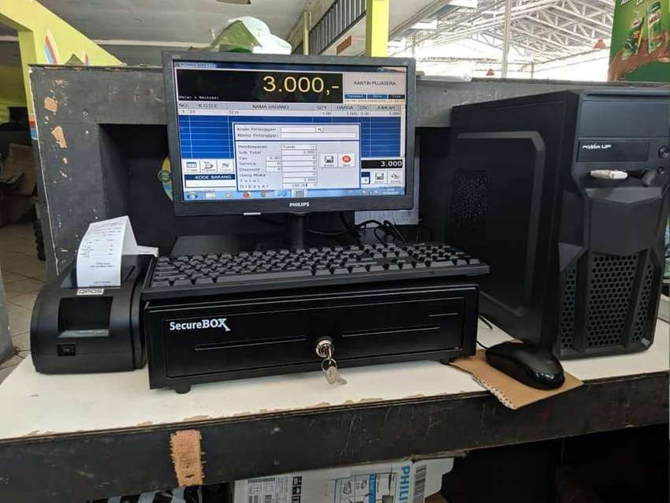
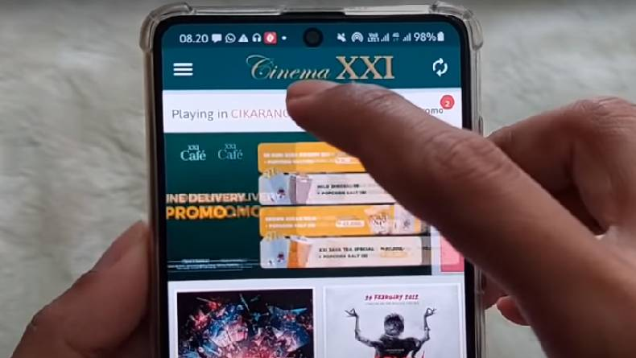
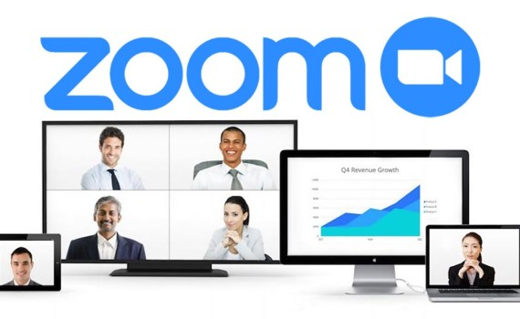
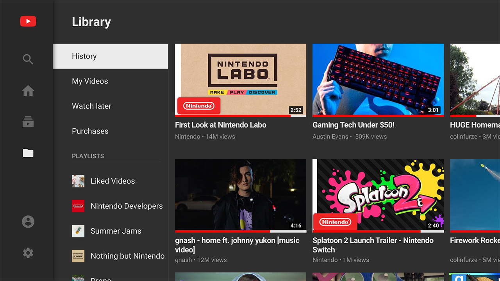
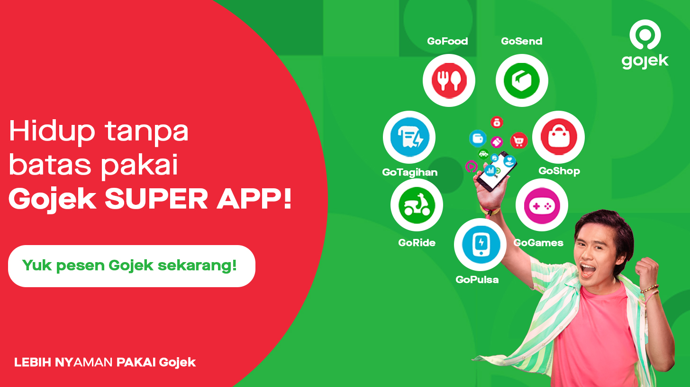

<!DOCTYPE html>
<html lang="en">
<head>
	<meta charset="UTF-8">
	<meta name="viewport" content="width=device-width, initial-scale=1.0">
	<title>Pertemuan_7</title>
	<link rel="stylesheet" href="style.css">
</head>
<body>
	<div class="navigation">
		<div class="prev">
			<a href="https://zakaria-design.github.io/pertemuan6/">
				<h4>Prev - Pertemuan_6</h4>
			</a>
		</div>
		<div class="next">
			<a href="https://zakaria-design.github.io/pertemuan8/">
				<h4>Next - Pertemuan_8</h4>
			</a>
		</div>
	</div>
	<div class="container">
		<div class="judul">
			<h2>PERTEMUAN 7</h2>
			<h2>MASYARAKAT INFORMASI</h2>
		</div>
		<h3>TUJUAN PEMBELAJARAN</h3>
		<p>Setelah mengikuti materi pada pertemuan ke-7 ini mahasiswa mampu 
			memahami kelompok masyarakat pengguna teknologi informasi beserta 
			perkembangannya.
		</p>
		<h3>URAIAN MATERI</h3>
		<div class="materi">
			<ol type="1">
				<li class="sub-judul">Pengertian Masyarakat Informasi</li>
				<p>Saat ini kebanyakan dari masyarakat menjalankan kehidupan seharihari hampir sulit terlepas dari jaringan internet. Masyarakat umum 
					memanfaatkan jaringan internet untuk mengakses informasi. Misalnya informasi 
					bidang pekerjaan, bisnis, pendidikan, kesehatan, pemerintahan, hiburan, 
					budaya, politik, gerakan sosial, perang dan damai, serta informasi tentang 
					keseharian teman-teman dan keluarga. Ketergantungan pada jaringan internet 
					mengakses informasi seperti itu telah memungkinkan pembentukan suatu 
					struktur sosial masyarakat yang baru, dikenal sebagai masyarakat informasi.
				</p>
				<p>Masyarakat informasi yakni masyarakat yang memiliki minat tinggi 
					dalam hal hubungan sosial mereka tentang interaksi dengan suatu media 
					informasi guna mendapat informasi yang akurat dan berdasar fakta, atau 
					tentang politik, ekonomi juga budaya.
				</p>
				<p>Adapun pengertian lain dari masyarakat informasi adalah suatu fakta 
					dimana korelasi antara tranformasi sosial yang luas yang didukung oleh 
					berkembangnya teknologi informasi dan komunikasi, dan kebutuhan dari 
					masyarakat umum untuk bisa terhubung satu dengan yang lain.
				</p>
				<li class="sub-judul">Ciri-ciri Masyarakat Informasi</li>
				<p>Teknologi informasi sangat penting bagi kehidupan masyarakat modern.
					Kehidupan masyarakat tidak bisa terlepas dari informasi yang sedang 
					berkembang. Aktifitas harian masyarakat informasi hampir tidak bisa terlepas 
					dari teknologi informasi. Bisa dikatakan bahwa pengolahan informasi merupakan inti dari aktifitas masyarakat informasi. Adapun ciri masyarakat 
					informasi adalah sebagai berikut :
				</p>
				<div class="cabang-materi">
					<ol type="a">
					<li>Menjadikan internet sebagai infrastruktur kehidupan sehari-hari.</li>
					<p>Masyarakat berusaha untuk terhubung dengan internet agar 
						masyarakat bisa mengakses suatu informasi. Informasi yang diakses 
						tersebut merupakan informasi yang bersifat penting terhadap usaha serta 
						pekerjaan.</p> 
					<li>Informasi menjadi sumber utama dalam dunia usaha.</li>
					<p>Masyarakat menggunakan informasi untuk memperoleh keuntungan 
						di suatu bidang usaha tertentu. Misalnya informasi nilai saham sangat 
						berguna bagi pelaku bisnis saham.</p>
					<li>Informasi menjadi aset bagi siapa saja.</li>
				    <p>Informasi yang tersebar di tengah masyarakat dapat digunakan oleh 
						siapa saja untuk kepentingan pribadi maupun kelompok selama informasi 
						tersebut benar-benar dibutuhkan.</p>
					<li>Terdapat sistem pelayanan online</li>
					<p>Terdapat banyak sistem pelayanan di berbagai aspek kehidupan
						yang bersifat online. Masyarakat lebih memilih suatu pelayanan yang 
						bersifat online karena hal tersebut dapat menghemat waktu dan biaya.</p>
					<li>Adanya persaingan yang ketat dan bersifat global.</li>
					<p>Persaingan terjadi karena masyarakat masing-masing berusaha 
						untuk memperoleh suatu keuntungan dari sebuah informasi yang sama. 
						Persaingan tersebut bisa bersifat global apabila suatu informasi punya 
						pengaruh terhadap masyarakat global.</p>
					<li>Proses pertukaran informasi yang sangat cepat.</li>
					<p>Proses pertukaran informasi di tengah masyarakat berlangsung
						intens dan cepat, hal ini dipengaruhi oleh masyarakat saling membutuhkan 
						informasi dan juga didukung oleh teknologi.</p>
					<li>Menjadikan informasi sebagai pendongkrak berkembangnya usaha.</li>
					<p>Informasi digunakan sebagai sarana untuk mempromosikan suatu 
						usaha kepada masyarakat umum yang lebih luas melalui internet.</p>
					<li>Menggunakan informasi sebagai pertimbangan untuk mengambil suatu 
						keputusan.</li>
					<p>Masyarakat menggunakan informasi yang sedang berkembang 
						untuk memprediksi sesuatu sehingga masyarakat benar-benar yakin pada 
						proses pengambilan sebuah keputusan.</p>
					<li>Terjadinya komunikasi hampir secara instan melintasi jarak yang begitu 
						jauh.</li>
					<p>Masyarakat dapat melakukan hubungan jarak jauh dalam hal 
						komunikasi dengan siapa saja dimanapun kapanpun tanpa terbatas oleh 
						waktu.</p>
					<li>Cepatnya proses penyerapan informasi.</li>
					<p>Masyarakat pekah terhadap informasi yang beredar sehingga 
						penyerapan informasi berlangsung cepat.</p>	
					<li>Menjadikan informasi sebagai salah satu komoditi ekonomi yang memiliki 
						harga sesuai dengan.</li>
					<p>Pelaku media online menjadikan informasi sebagai suatu hal yang 
						memiliki nilai jual.</p>
					<li>Tingginya nilai ketergantungan terhadap informasi.</li>
					<p>Dalam melaksanakan aktifitas maupun untuk mengambil keputusan 
						masyarakat membutuh informasi-informasi terkait mengenai aktifitas atau 
						suatu keputusan</p>
					<li>Tingginya tingkat responsibilitas terhadap informasi.</li>
					<p>Masyarakat pekah terhadap suatu informasi yang beredar. Terlebih 
						terhadap informasi yang mempunyai pengaruh terhadap masyarakat 
						tersebut.</p>
					<li>Pola hidup atau kehidupan sosial bisa dipengaruhi oleh informasi.</li>
					<p>Pola hidup masyarakat bisa berubah oleh pengaruh informasi yang 
						ada atau informasi yang diterima. Tanggapan terhadap suatu informasi bagi 
						masing-masing masyarakat berbeda sehingga efek suatu informasi 
						terhadap masyarakat juga berbeda</p>
					<li>Masyarakat cenderung bersifat lebih demokratis.</li>
					<p>Mudahnya masyarakat mengakses dan mendistribusi informasi 
						membuat masyarakat bersifat lebih demokratis dari sebelumnya. Hal ini 
						terjadi karena masyarakat dapat menyampaikan pendapat serta kritikan 
						langsung melalui media online.</p>
					<li>Cara mengakses informasi berubah dari media cetak ke media online.</li>
					<p>Masyarakat informasi mengakses informasi secara online. Hal ini 
						dipengaruhi oleh proses akses informasi yang sangat cepat serta sifat 
						informasi yang up to date. Sehingga minat masyarakat terhadap media 
						cetak mulai menurun.</p>
					</ol>					
				</div>
				<p>Beberapa hal yang terjadi ditengah masyarakat karena adanya 
					masyarakat informasi antara lain :</p>
				<div class="cabang-materi">
					<ol type="a">
						<li>Masyarakat lebih terbuka</li>
						<p>Secara individual masyarakat yang aktif menggunakan media sosial 
							dimana masyarakat sering mengupdate informasi kesehariannya sehingga 
							orang lain bisa mengetahui lebih mengenainya. Secara umum, masyarakat 
							lebih terbuka terhadap suatu informasi yang berkembang meskipun masingmasing orang punya respon yang berbeda-beda.
							</p>
						<li>Masyarakat lebih kritis.</li>
						<p>Masyarakat lebih berpikir kritis dimana masyarakat bisa menilai 
							sesuatu lebih detail. Masyarakat bisa memberikan kritikan dan masukan 
							karena masyarakat bisa menilai sesuatu berdasarkan pertimbangan dari 
							informasi-informasi yang ada.</p>	
						<li>Dalam mengambil keputusan, masyarakat informasi lebih demokratis 
							dibandingkan masyarakat pra informasi.</li>
						<p>Masyarakat informasi bisa menyampaikan pendapat yang bisa 
							dibaca oleh pengguna media sosial lainnya.</p>
						<li>Masyarakat lebih pekah terhadap sistem pemerintahan.</li>
						<p>Berkat informasi seputar informasi pemerintahan yang berkembang, 
							perhatian masyarakat terhadap sistem pemerintahan lebih intens. Hal ini bisa terjadi karena masyarakat dapat mengakses informasi mengenai sistem pemerintahan.</p>
						<li>Ketergantungan masyarakat terhadap IPTEK sangat tinggi</li>
						<p>Masyarakat informasi tidak bisa terlepas dari ilmu teknologi yang 
							berkembang. Perkembangan teknologi merupakan salah satu faktor 
							pendukung untuk dapat mengakses informasi.</p>							
					</ol>					
				</div>
				<p>Aspek-aspek kehidupan dan pola hidup masyarakat banyak berubah 
					seiring munculnya tatanan sosial baru yaitu masyarakat informasi. Perubahan 
					ini terjadi hampir di semua bidang. Contoh pengaruh masyarakat informasi 
					terhadap bidang pekerjaan atara lain :
				</p>
				<div class="cabang-materi">
					<ol type="a">
						<li>Tempat Parkir</li>
						<p>Petugas yang memberikan kartu atau karcis parkir yang sebelumnya 
							dilakukan oleh manusia kini diganti oleh komputer. Komputer di pintu masuk 
							tempat parkir kendaraan sangat membantu pihak pengelola. Komputer yang 
							didukung beberapa perangkat lainnya bisa mendata satu per satu 
							kendaraan yang masuk ke tempat parkir dilengkapi dengan data berupa 
							rekaman video. Sistem ini lebih efektif dari pada sistem manual untuk 
							meminimalisir tindak pencurian kendaraan bermotor di tempat parkir</p>
						
						<li>Kamera pengawas atau CCTV</li>
					    <p>Pengawas tempat parkir yang sebelumnya dilakukan oleh penjaga 
							parkir yang mana membutuhkan banyak tenaga, kini sudah diganti oleh 
							kamera pengawas. Kamera pengawas digunakan untuk memantau suatu
							keadaan di suatu tempat. Dengan adanya kamera pengawas ini sangat 
							membantu untuk mematau suatu area yang cukup luas. Selain untuk 
							memantau keadaan, hasil rekaman dari kamera pengawas juga bisa 
							digunakan untuk melihat kembali suatu keadan pada waktu sebelumnya 
							yang diinginkan.</p>
						
						<li>Komputer Kasir</li>
						<p>Membantu proses transaksi pegawai kasir. Komputer sangat 
							membantu mempercepat proses transaksi di kasir dengan perhitungan yang 
							dihasilkan sangat akurat.</p>
						
						<li>Pembelian Tiket Online</li>	
						<p>Poses pembelian tiket kareta api maupun pesawat terbang. Calon 
							penumpang bisa memesan sendiri tiket tanpa melalui agen-agen. Calon 
							penumpang juga bisa memilih sendiri jadwal dan tempat duduk sesuai 
							keinginan. Di dalam kondisi seperti ini maka fungsi-fungsi dari agen tiket 
							kereta api maupun pesawat terbang mulai diambil alih oleh kemajuan 
							teknologi.</p>
						
						<li>Penggunaan komputer di bidang industri</li>
						<p>Penggunaan komputer di bidang industri dimana ketelitian dan 
							kemampuan pengolahan datanya lebih tinggi dibandingkan dengan 
							manusia.</p>
						<li>Pengolahan data administrasi</li>
						<p>Pengolahan data administrasi suatu instansi terproses dengan cepat 
							berkat bantuan komputer.</p>						
					</ol>					
				</div>
				<li class="sub-judul">Hal-hal yang Mempengaruhi Terjadinya Masyarakat Informasi</li>
				<p>Kemunculan masyarakat informasi tidak terjadi begitu saja, melainkan 
					disebabkan oleh faktor-faktor melekat di tengah masyarakat. Faktor-faktor yang 
					mendorong terjadinya masyarakat informasi antara lain :
				</p>
				<div class="cabang-materi">
					<ol type="a">
						<li>Tuntutan dari efek perkembangan zaman</li>
						<p>Perkembangan zaman turut mempengaruhi terbentuknya 
							masyarakat informasi. Dengan berkembangnya teknologi informasi pada 
							zaman modern sekarang ini, informasi merupakan salah satu faktor yang 
							sangat dibutuhkan seseorang agar dapat mengetahui dan dapat 
							mempelajari situasi yang sedang terjadi sekitar lingkungan tempat orang 
							tersebut berada. </p>
						<li>Dinamika dalam komunikasi dan informasi</li>
						<p>Sistem komunikasi dan Informasi semakin berkembang dan selalu 
							mendorong masyarakat untuk mengikuti tren yang up to date agar tidak 
							tertinggal suatu informasi terbaru yang dinilai sangat penting bagi mereka. </p>
						<li>Berkembangnya teknologi komputer</li>
						<p>Dengan berkembangnya teknologi komputer, banyak dari pola 
							aktifitas masyarakat berubah dari cara yang manual menjadi otomatis serta 
							online. Hal ini disebabkan oleh teknologi komputer yang selalu berkembang.</p>
						<li>Berkembangnya teknologi informasi</li>
					    <p>Berkembanganya teknologi informasi menyuguhkan beberapa 
							solusi dari beberapa masalah kehidupan masyarakat. Dengan adanya 
							teknologi informasi, masyarakat dapat melakukan suatu aktifitas yang 
							sebelumnya sulit bahkan mustahil dilakukan seperti halnya berkomunikasi 
							jarak jauh. </p>
						<li>Perubahan karakteristik pola kerja</li>
						<p>Pola kerja masyarakat sebelumnya banyak mengeluarkan biaya, 
							energi serta waktu. Pada saat berkembangnya teknologi informasi, 
							seseorang bisa melakukan pekerjaan cukup dari rumah saja. Pekerjaannya 
							banyak berorientasi sistem online.</p>
						<li>Adanya perubahan cara penyebaran informasi</li>
						<p>Pada masa sebelum ada teknologi, penyebaran informasi hanya 
							bisa melalui televisi, radio, surat kabar serta dari mulut ke mulut. Proses 
							penyebaran atau penyampaian informasi ke tujuan sangat lambat. Dengan 
							adanya teknologi, penyebaran berita sangat cepat karena masyarakat 
							dapat mengakses langsung suatu berita dengan cepat melalui media 
							online.</p>
						<li>Adanya perubahan cara penyebaran pengetahuan</li>
						<p>Ilmu pengetahuan pada masa berkembangnya teknologi, dapat 
							diperoleh dari berbagai sumber selain sekolah formal. Seseorang dapat 
							memperoleh suatu pengetahuan melalui internet. Pengguna internet juga 
							bisa membagikan ilmunya melalui internet. Proses belajar mengajar juga 
							bisa dilakukan melalui teknologi dimana guru dan murid tidak diharuskan 
							berada pada satu tempat yang sama. Proses belajar dan mengajar dapat 
							dilakukan kapan dan di mana saja selama masih terhubung jaringan 
							internet.</p>
						<li>Tingginya minat masyarakat terhadap teknologi informasi</li>
						<p>Tingginya minat masyarakat terhadap suatu teknologi informasi 
							terbaru tidak terlepas dari nilai kegunaan yang ditawarkan oleh teknologi 
							tersebut. Ketertarikan masyarakat terhadap teknologi informasi disebabkan 
							oleh manfaat dari teknologi baru tersebut, dimana teknologi baru 
							memberikan sesuatu yang baru dan segar bagi masyarakat.</p>
						<li>Sifat ingin tahu yang tinggi dari masyarakat terhadap informasi terbaru</li>
						<p>Sifat ingin tahu masyarakat mengenai suatu informasi, membuat 
							masyarakat itu sendiri terikat dengan teknologi informasi. Masyarakat tidak 
							ingin ketinggalan informasi menarik maupun informasi yang dinilai penting.</p>
						<li>Melakukan suatu pekerjaan dengan mudah</li>
						<p>Keinginan dari masyarakat untuk melakukan aktifitas dengan 
							proses yang cukup mudah namun hasilnya sangat memuaskan.</p>						
					</ol>					
				</div>
				<li class="sub-judul78 ">Pengenalan Internet</li>
				<p>Merupakan media penghubung yang dapat menghubungkan beberapa 
					media di seluruh dunia guna melakukan komunikasi dan mendapatkan 
					informasi dengan menggunakan jaringan. Jaringan ini telah menjadi bagian 
					integral kehidupan modern yang juga merupakan sarana komunikasi dan 
					sosialisasi masa kini.
				</p>
				<p>Internet memiliki cara yang sama sekali berbeda dan ramah konsumen 
					untuk berkomunikasi dan berangsur-angsur berkembang menjadi penyangga 
					terpenting bagi kehidupan pribadi, profesional, dan kehidupan sosial dari 
					sebagian besar populasi dunia. Penggunaannya mulai dari sebagai mesin 
					pencari yang sangat dasar, bersosialisasi, berbelanja, sebagai alat bantu dalam 
					sebuah penelitian yang canggih, perbankan, bisnis, dan beberapa lainnya.
				</p>	
				<div class="cabang-materi">
					<ol type="a">
						<li>Sejarah Singkat Internet</li>
						<p>Pada masa perang dingin sekitar pertengahan abad 19, departemen
							pertahanan AS (DoD) membentuk Advanced Research Projects Agency 
							(ARPA) dan digunakan oleh militer amerika serikat. DoD membuat jaringan 
							komputer yang tersebar yang memungkinkan dapat melakukan komunikasi 
							dan pertukaran informasi dengan mudah dan sulit dihancurkan oleh musuh. 
							Saat ini, internet hampir menjadi kebutuhan utama. Internet menawarkan 
							berbagai layanan. Layanan yang yang disajikan dinilai cukup lengkap, serta 
							komunikatif dan memanjakan konsumen pada saat mengakses internet. 
							Keberadaan internet di tengah masyarakat semakin penting dan bahkan 
							telah menjadi kebutuhan pokok pada beberapa tahun terakhir. Saat ini 
							internet menjadi suatu kebutuhan mutlak masyarakat dan dapat digunakan 
							selama 24 jam. Hal ini berkat teknologi yang dinamakan Asymmetric Digital 
							Subscriber Line (ADSL).
						</p>
						<li>Berbagai Aplikasi Dari Internet</li>
						<p>Aplikasi internet banyak berkembang dari waktu ke waktu. Aplikasi 
							internet bertambah seiring dengan berkembangnya IPTEK dan juga sesuai
							dengan kebutuhan. Berikut merupakan beberapa contoh aplikasi internet 
							yang biasa digunakan:
						</p>
						<div class="materi">
							<ol type="1">
								<li>Facebook</li>
								<p>Facebook merupakan layanan sosial media dimana seorang 
									pengguna facebook bisa mengekspresikan diri melalui postingan foto, 
									video maupun tulisannya yang dapat dilihat dan dikomentar oleh umum 
									atau pengguna facebook lainnya. Pada facebook juga terdapat fitur 
									komentar oleh pengguna facebook lainnya tehadap suatu file yang 
									diposting oleh pengguna facebook. Facebook juga menyediakan fitur
									percakapan bagi pengguna agar bisa melakukan percakapan yang 
									bersifat personal.
								</p>
								
								<li>WhatsApp</li>
								<p>Aplikasi ini merupakan aplikasi yang mendukung komunikasi 
									jarak jauh baik antara 2 orang maupun lebih. Selain komunikasi lewat 
									suara, dengan whatsapp juga bisa berkomunikasi menggunakan video. 
									Aplikasi ini juga mendukung pengguna untuk mengirim pesan text 
									singkat, pesan suara, gambar, dokumen serta video.
								</p>
								
								<li>Zoom</li>
								<p>Aplkasi yang marak digunakan pada masa pandemik Covid-19 
									adalah zoom. Aplikasi ini memungkinkan pengguna untuk melakukan 
									teleconference sehingga pertemuan penting tidak bisa dilewatkan 
									meskipun peserta tidak berada di tempat yang sama. Pertemuan 
									dilakukan bisa dari tempat masing-masing peserta berada.
								</p>
								
								<li>Youtube</li>
								<p>Youtube merupakan media sosial dimana pengguna bisa 
									membagikan video hasil kreasi pengguna tersebut dngan tujuan untuk 
									membagikan kepada pengguna youtube lainnya.
								</p>
								
								<li>Newsgroup</li>
								<p>Aplikasi ini merupakan aplikasi yang dapat mengelompokkan 
									berita-berita sesuai dengan inti dari berita tersebut. Newsgroup sangat 
									bermanfaat bagi kelompok-kelompok yang membutuhkan topik berita 
									tertentu. Kelompok tersebut bisa saling berdiskusi, kirim pesan atau berbagi informasi di dalam newsgroup sehingga suat berita atau 
									informasi dapat diakses.
								</p>
								<li>File Transfer Protocol (FTP)</li>
								<p>File Transfer Protocol (FTP) biasa digunakan untuk mengirimkan 
									file maupun mengambil file dari satu komputer ke komputer lain. Aplikasi 
									FTP biasa digunakan oleh pengguna internet untuk mencari dan 
									mendownload sebuah file di internet. Selain itu FTP juga bisa digunakan 
									untuk membagi sebuah file ke internet sehingga file tersebut bisa 
									diakses oleh pengguna internet lainnya dari seluruh pelosok dunia.
								</p>
								<li>Telnet</li>
								<p>Telnet merupakan aplikasi internet yang biasa digunakan untuk 
									mengakses sebuah komputer yang terletak cukup jauh dari pengguna 
									internet. Syarat agar telnet dapat dilakukan adalah kita harus 
									mengetahui terlebih dahulu alamat IP (IP Address) dari komputer tujuan 
									atau komputer yang akan kita akses. Selain itu juga kita harus memiliki 
									hak akses (User ID dan password) ke komputer tujuan tersebu
								</p>
								<li>Internet Relay Chat (IRC)</li>
								<p>Internet Relay Chat (IRC) merupakan aplikasi internet yang 
									biasa digunakan untuk saling berinteraksi di internet yang lebih dikenal 
									dengan sebutan chatting. Chatting dilakukan dengan cara mengirim 
									pesan dalam bentuk text kepada lawan bicara.
								</p>
								<li>Gopher</li>
								<p>Aplikasi ini digunakan untuk mencari informasi, mengambil serta 
									mendistribusikan informasi yang ada di internet. Informasi yang tersedia 
									pada aplikasi gopher berupa teks.
								</p>
								<li>Ping </li>
								<p>Ping digunakan untuk mengecek status jaringan komputer yang 
									sedang digunakan. Dengan menggunakan ping ini kita dapat 
									mengetahui apakah komputer kita terhubung dengan komputer lainnya 
									di internet.
								</p>
								<li>E-mail</li>
								<p>Email merupakan aplikasi surat-menyurat menggunakan media 
									elektronik. Pada penggunaannya, email lebih efisien dibandingkan dengan kirim surat biasa. Pada prosesnya, waktu pengiriman email sampai dengan waktu penerimaan email sangat singkat. Email juga bisa 
									digunakan untuk mengirim softcopy dokumen, foto serta video. Saat ini 
									fungsi email sangat penting bagi seseorang. Email dapat disebut 
									sebagai identitas diri seseorang dalam menggunakan internet. Pada 
									beberapa kondisi, email digunakan untuk mengverifikasi data 
									seseorang.
								</p>
								
								<li>VoIP</li>
								<p>VoIP adalah singkatan dari voice over internet protocol. VoIP 
									dapat disebut sebagai telpon menggunakan jaringan internet. 
									Keuntungan menggunakan VoIP adalah bisa melakukan telpon 
									interlocal maupun international dengan harga relatif murah.
								</p>
								<li>Gojek</li>
								<p>Aplikasi ini digunakan baik untuk keperluan jasa transportasi, 
									jasa antar jemput makanan, jasa kebersihan jasa mekanik dan lainnya. 
									Konsumen menggunakan aplikasi ini untuk mencari layanan jasa yang 
									dibutuhkan.
								</p>
								
							</ol>
							
						</div>
						
					</ol>
					
				</div>	
			</ol>			
		</div>
	</div>	
</body>
</html>